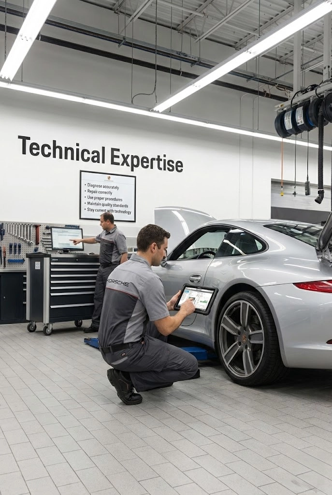
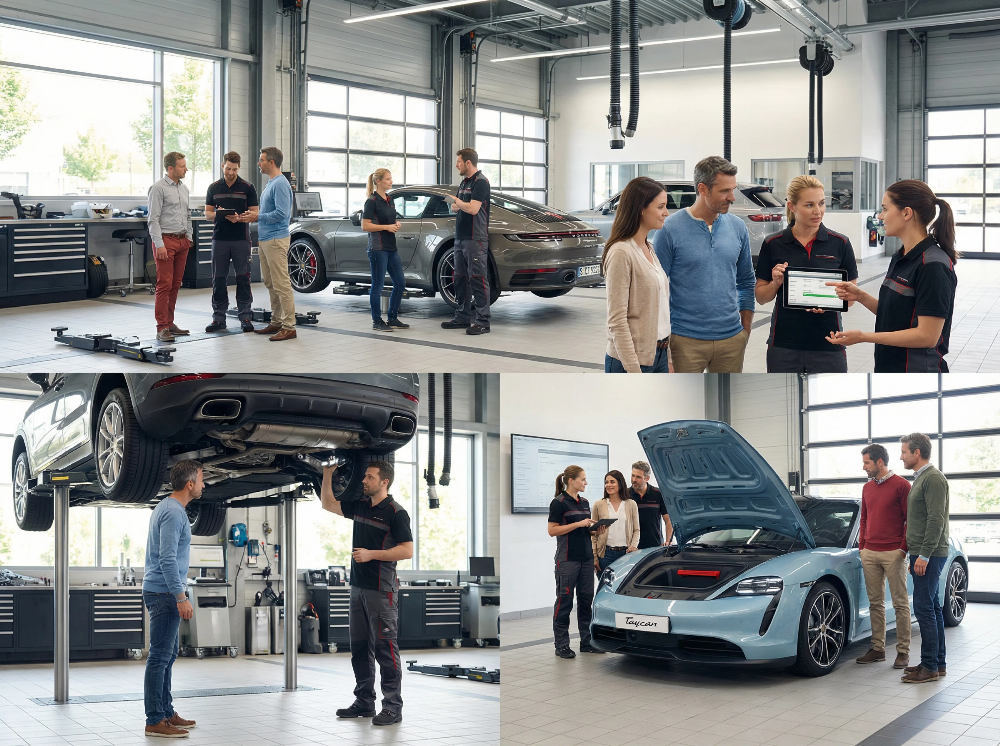

You're More Than Just a Technical Expert
Technical Expertise
- Diagnose accurately
- Repair correctly
- Use proper procedures
- Maintain quality standards
- Stay current with technology

+
Communication Excellence
- Ensure customer understands
- Build confidence and trust
- Manage expectations
- Explain complex concepts clearly
- Maintain professionalism
=

Required · Not Optional
The Reality
Many technicians excel at the first half. Fewer excel at both. Advanced Porsche technicians must master both to truly represent the brand.
Your Leadership Role
- 1 Junior technicians watch and learn from you
- 2 You set the standard for communication in your shop
- 3 Your behavior shapes shop culture
- 4 Leadership through example
